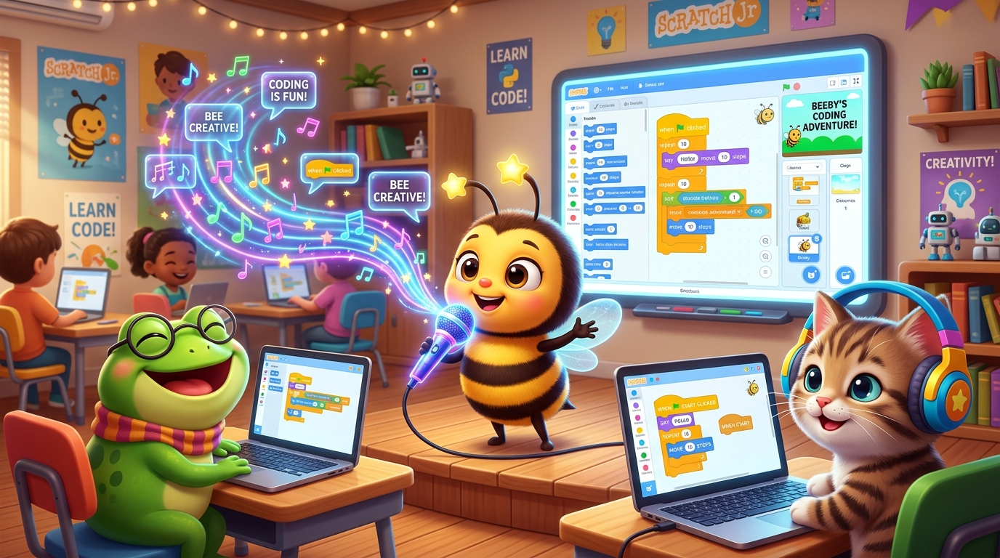

Karakter Berbicara Nyata! 🗣️✨
Memanfaatkan Keajaiban Ekstensi AI Text-to-Speech di Scratch 3.0 agar Karakter Bisa Bicara Bahasa Indonesia!

Pernah Dengar Robot Berbicara? 🤖💬
Bagaimana komputer bisa tahu cara mengucapkan kata-kata seperti manusia?
Siri & Google Voice
Saat kita bertanya pada smartphone, ada asisten pintar yang menjawab dengan suara manusia asli!
Kecerdasan Buatan (AI)
AI membaca teks tulisan kita huruf per huruf, lalu mengubahnya menjadi gelombang suara vokal!
Hari Ini Giliran Beeby!
Kita akan memberikan Beeby pita suara ajaib! Dia tidak cuma menampilkan teks gelembung, tapi bersuara merdu!
Analogi: Pita Suara Ajaib Sang Robot 🎙️
Perbedaan blok Say biasa vs blok Speak AI.
Blok Say (Komik Bisu)
Hanya memunculkan teks gelembung komik di atas kepala karakter. Karakter tetap sunyi tanpa ada bunyi suara.
Blok Speak (AI Voice Synthesis)
Scratch mengirim teks ke server AI, lalu komputer menyalakan speaker dan mengucapkannya dengan aksen Indonesia!
Membuka Menu Extension di Scratch 🧩
Tombol rahasia di pojok kiri bawah untuk membuka kekuatan tersembunyi Scratch!
Lihat Pojok Kiri Bawah Layar
Cari tombol biru bergambar 2 balok puzzle bertanda + (Add Extension).
Pilih Text to Speech
Klik kotak kartu warna hijau toska bertuliskan "Make your projects talk".
Hore! Kategori Baru Muncul!
Di panel blok kiri, sekarang ada warna toska khusus bernama Text to Speech.
Add Extension Menu
Didukung teknologi cloud speech canggih Amazon Web Services (AWS) yang terintegrasi di Scratch 3.0!
Trio Blok Sakti Text-to-Speech 🧙♂️
Tiga blok penting yang wajib dipasang berurutan:
1. SET VOICE TO
Memilih kepribadian suara: alto (normal wanita), tenor (normal pria), squeak (imut), giant (raksasa), kitten (kucing).
2. SET LANGUAGE TO
Sangat Penting! Supaya komputer melafalkan kata-kata dengan logat Bahasa Indonesia yang fasih dan alami.
3. SPEAK
Memerintahkan karakter membacakan kalimat di dalam kotak putih secara lantang melalui speaker!
Uji Coba Suara AI di Sini! 🔊
Pilih karakter, atur jenis suara, ketik kalimat, dan dengarkan suaranya nyata!
Menyusun Skrip Kode Karakter 💻
Instruksikan siswa menyusun blok ini di komputer masing-masing:
Sprite 1: Beeby
💡 Tips: Pasang blok Say dan Speak agar ada balon teks sekaligus suara!
Sprite 2: Katak Lucu
💡 Saat diklik, katak menjawab dengan suara bas raksasa yang menggelitik!
Mengapa Suaranya Tidak Muncul? 🕵️♂️🔍
3 hal utama yang harus dicek saat suara tidak terdengar:
Volume Laptop Mati / Nol
Cek ikon speaker di pojok laptop atau kabel earphone. Pastikan volume minimal 60% dan tidak dalam posisi Mute.
Lupa Set Bahasa Indonesia
Jika bahasa masih English, kata "Halo" akan diucapkan dengan logat aneh "Hey-low". Ubah ke Indonesian!
Koneksi Internet Putus
Karena Text to Speech butuh server cloud AWS Scratch, pastikan internet tersambung agar suara bisa disintesis.
Tantangan: "Paduan Suara Hutan Fantasi" 🌳🎶
Uji kreativitasmu dengan menambahkan karakter hewan lain!
Misi Kamu Hari Ini:
- ✔ Tambahkan minimal 3 karakter sprite berbeda di panggung.
- ✔ Atur jenis suara yang berbeda: Squeak, Giant, dan Kitten.
- ✔ Saat karakter diklik, mereka memperkenalkan nama dan makanan kesukaannya!
- ⭐ Bonus: Tambahkan efek gerak lompat atau putar saat berbicara!
Badge Spesial Sesi 06
Siswa yang berhasil menyelesaikan tantangan akan mendapatkan gelar "Junior AI Voice Master"!
Panggung Karya Cilik & Tepuk Koding! 👏🎉
Waktunya menunjukkan proyek karakter bicaramu ke teman-teman sekelas!
🌟 Rutinitas Pameran Karya (Showcase):
1. Siswa share screen atau angkat laptop ke depan kelas.
2. Klik bendera hijau dan klik setiap karakter untuk mendengarkan dialognya.
3. Seluruh kelas memberikan apresiasi bersama Tepuk Koding Beekoding!
🚀 Misi Pertemuan Berikutnya (Sesi 07):
Kita akan menjadi sutradara dan mendesain avatar robot atau hewan ajaib buatan sendiri dengan AI image generator prompt!